Procurement and Selection Matrix: Local-First vs SaaS vs Hybrid for cloud governance tools
Part 7 closes the series with buyer-focused selection logic. It defines decision criteria, partner-aware positioning, and practical procurement workflows for cloud cost management platform evaluations.
Cloud governance tools work best when execution and ownership are explicit. This chapter extends a cloud governance framework with practical cloud finops decision loops so cloud governance tools remain measurable and repeatable.
Industry Solutions Whitepaper Series
This final chapter turns architecture and operations into procurement decisions. It also includes appendix links for reusable templates.
Enterprise buyers do not need another generic comparison chart. They need a decision matrix that reflects trust boundary, execution cadence, team capacity, and procurement constraints. Part 7 provides that matrix and clarifies where partner SaaS platforms are strong, where local-first governance is strong, and when hybrid is the right architecture.
1) Decision drivers that actually change outcomes
Procurement discussions often start with feature count and end with operational surprises. To avoid this, evaluate five primary drivers first:
- Custody boundary: whether metadata and credentials can be processed outside operator boundary.
- Decision latency: time from finding to approved action in real operating cadence.
- Evidence quality: ability to produce traceable proof for finance, engineering, and security.
- Contract and cost model: spend-linked fees vs capability-based pricing and expansion behavior.
- Team fit: whether the organization can operate required workflows consistently.
These drivers map directly to adoption risk. A tool that looks strong in demos can still fail if decision latency or custody assumptions are misaligned with enterprise constraints.
2) When local-first is the better first choice
Choose local-first first when at least two of these conditions hold:
- Security review is sensitive to third-party custody of metadata and IAM patterns.
- Engineering teams need action-grade evidence for weekly closure loops.
- Procurement timeline favors deploy-and-validate over long vendor onboarding cycles.
- Team size is moderate and needs predictable operational overhead.
In this mode, a cloud governance framework should prioritize deterministic scans, strong evidence exports, and owner-based routing. This is where a privacy first cloud cost tool usually offers practical rollout speed.
3) When SaaS attribution platforms are stronger
Choose SaaS-first when macro financial attribution and executive analytics depth are primary requirements, and custody review is acceptable within policy. Typical indicators:
- Dedicated FinOps team with mature chargeback/showback workflows.
- Need for broad business-unit allocation narratives and board-level trend storytelling.
- Existing vendor governance process can absorb onboarding and review overhead.
This is not a weakness of local-first models; it is a scope difference. Heavyweight SaaS and local-first can serve different layers of the same operating stack.
4) Hybrid architecture: common and often optimal
Many enterprise buyers should evaluate hybrid by default. Use SaaS for strategic attribution and long-horizon financial narratives. Use local-first for boundary-sensitive execution, technical validation, and weekly closure operations. Hybrid avoids false either-or decisions and supports phased adoption.
The critical design rule in hybrid: metric semantics must remain aligned. If savings definitions differ between systems, leadership receives conflicting signals and trust degrades quickly. Standardize KPI contracts in the Appendix and enforce them across tools.

5) Procurement matrix and scoring model
Use a weighted scorecard with explicit tradeoffs. Suggested dimensions and starter weights:
- Trust boundary fit: 25%
- Execution speed and closure quality: 25%
- Financial attribution depth: 20%
- Operational overhead and team fit: 15%
- Contract and expansion economics: 15%
Adapt weights by organization type, then test each option with one pilot scope and fixed success criteria. A cloud cost management platform decision should be pilot-verified, not slide-driven.
6) Partner-aware positioning without false competition
Technical buyers respond better to honest scope boundaries than aggressive positioning. Partner-aware guidance should clearly state:
- What local-first execution does best: custody-sensitive operation and action-grade evidence.
- What SaaS attribution does best: broad business mapping and executive trend context.
- Where hybrid generates highest value: combining strategy-level analytics with boundary-fit execution.
This positioning improves procurement credibility and reduces post-purchase expectation mismatch.
7) Appendix bridge for implementation teams
Decision quality improves when procurement outputs connect directly to implementation templates. Use the Appendix for shared terms, KPI formulas, packet templates, and review checklists. This bridge ensures handoff from buyer decision to operator execution is short and lossless.
8) Scoring mechanics and pilot acceptance gates
A selection matrix is useful only when scores can be reproduced. Define scoring mechanics before pilots begin: scoring scale, weighting logic, evidence required per criterion, and tie-break rules. Keep criteria stable for the entire pilot window.
Recommended pilot acceptance gates include: minimum closure quality threshold, maximum acceptable decision latency, explicit custody-fit confirmation, and documented operational overhead estimate. If an option fails any gate, it should not progress regardless of marketing strength in other dimensions.
This discipline protects teams from procurement drift where qualitative impressions override operational fit.
9) Commercial model analysis for long-term fit
Commercial structure shapes long-term viability. Spend-linked pricing can be acceptable for attribution-heavy programs, but teams should test expansion behavior under cloud growth scenarios. Capability-based pricing can improve predictability for execution-focused programs. Hybrid deployments require explicit cost responsibility split to avoid duplicate spend.
Procurement should model at least three scenarios: current scale, 2x scale, and contraction scenario. Governance tooling that is affordable only at one scale introduces avoidable strategic risk.
Contract terms should also define data handling boundaries, support expectations, and change-notification obligations for metric semantics that impact executive reporting.
10) Stakeholder playbook for decision workshops
Selection workshops work best when each stakeholder evaluates a defined subset of criteria:
- Security: custody boundary and evidence integrity.
- Engineering: runtime reliability and closure workflow fit.
- Finance/FinOps: attribution depth and realized-value reporting.
- Procurement: contract clarity and expansion economics.
At workshop close, require one unified decision note with dissent capture and mitigation plan. This prevents hidden objections from resurfacing late in procurement cycles.
11) Post-selection governance guardrails
After selection, teams should enforce a 60-day validation period with fixed KPIs and weekly check-ins. The goal is to validate that pilot outcomes translate into routine operations. If KPI drift appears immediately after selection, teams should pause expansion and correct semantics before rollout scale increases.
This post-selection discipline is where many programs recover value. It converts a procurement decision into a controlled operating transition rather than a one-time purchase milestone.
12) Real procurement scenarios and what changed the decision
Scenario A: Mid-size SaaS team with aggressive release cadence. The team initially favored a broad SaaS platform due to executive dashboard quality. Pilot review showed closure latency remained high because ownership handoff was still manual. Decision changed to local-first primary plus lightweight attribution overlay. Why it worked: closure workflow was optimized first, then reporting breadth was layered in.
Scenario B: Fintech team under strict review pressure. The team wanted full-feature SaaS analytics but faced prolonged custody review lead times. Selection moved to local-first first phase with explicit evidence packets and risk-lane approvals, then optional attribution integration later. Why it worked: procurement risk and rollout speed were both reduced without locking out future expansion.
Scenario C: Multi-region retail operations. The team evaluated three tools and found KPI definitions inconsistent across pilots. The winning path was hybrid, but only after a shared KPI contract and packet template were enforced. Why it worked: semantic alignment was treated as a gate, not a post-go-live task.
13) Weighted scorecard example (practical worksheet)
A practical worksheet helps teams avoid subjective conclusions. Example scoring (1-5 scale, weighted):
- Trust boundary fit (25%): Local-first 5, SaaS 2, Hybrid 4
- Execution latency (25%): Local-first 4, SaaS 3, Hybrid 4
- Attribution depth (20%): Local-first 3, SaaS 5, Hybrid 5
- Operational overhead fit (15%): Local-first 4, SaaS 3, Hybrid 3
- Commercial expansion fit (15%): Local-first 4, SaaS 3, Hybrid 3
In this sample, weighted totals favor Hybrid narrowly over Local-first, with SaaS third. The final decision still depends on gate checks. If custody gate fails for SaaS in the current quarter, Hybrid may also be delayed. Teams should therefore combine weighted scoring with hard gate pass/fail logic.
14) Common procurement misreads and correction actions
- Misread: Best dashboard means best operating fit.
Correction: add closure-latency gate and owner-routing quality check. - Misread: Hybrid always reduces risk.
Correction: require KPI semantic contract before hybrid approval. - Misread: Pilot success equals enterprise readiness.
Correction: run 60-day post-selection validation with unchanged KPI definitions. - Misread: Compliance support claim equals certification status.
Correction: tag claims as validated or inferred and include source references.
These corrections are small but high-leverage. They prevent late-stage procurement surprises and keep decision artifacts useful during implementation handoff.
Industry Pain Signals and Required Outcomes
SaaS and internet teams. Pain signal: need fast execution fit more than long procurement cycles. Required outcome: pilot-first matrix that validates closure speed and recurrence impact.
Fintech and payments. Pain signal: custody and review constraints dominate selection decisions. Required outcome: weighted scoring with trust-boundary criteria at top priority.
Healthcare. Pain signal: risk of over-claiming compliance support in vendor evaluation. Required outcome: explicit validated vs inferred claim tags in decision materials.
Manufacturing and retail. Pain signal: hybrid environments with uneven team maturity. Required outcome: partner-aware hybrid model with unified KPI semantics and governance handoff templates.
Implementation Checklist
- Define weighted selection matrix before vendor demos.
- Run fixed-scope pilot with shared success criteria and evidence template.
- Standardize KPI semantics across local-first and SaaS layers in hybrid mode.
- Document partner-aware scope boundaries to prevent expectation drift.
- Publish procurement-to-operations handoff package with appendix references.
Risks
- Selection bias toward visual dashboards over closure quality evidence.
- Hybrid metric mismatch if KPI contracts are not unified.
- Procurement delay when custody assumptions are discovered late.
- Operational overload if governance model and team capacity are misaligned.
Next Decision
Move to the Appendix to apply standardized terms, KPI definitions, templates, and checklists in rollout governance workflows.
Run this governance baseline in your own environment
Save your first $1,000 before the next billing cycle.